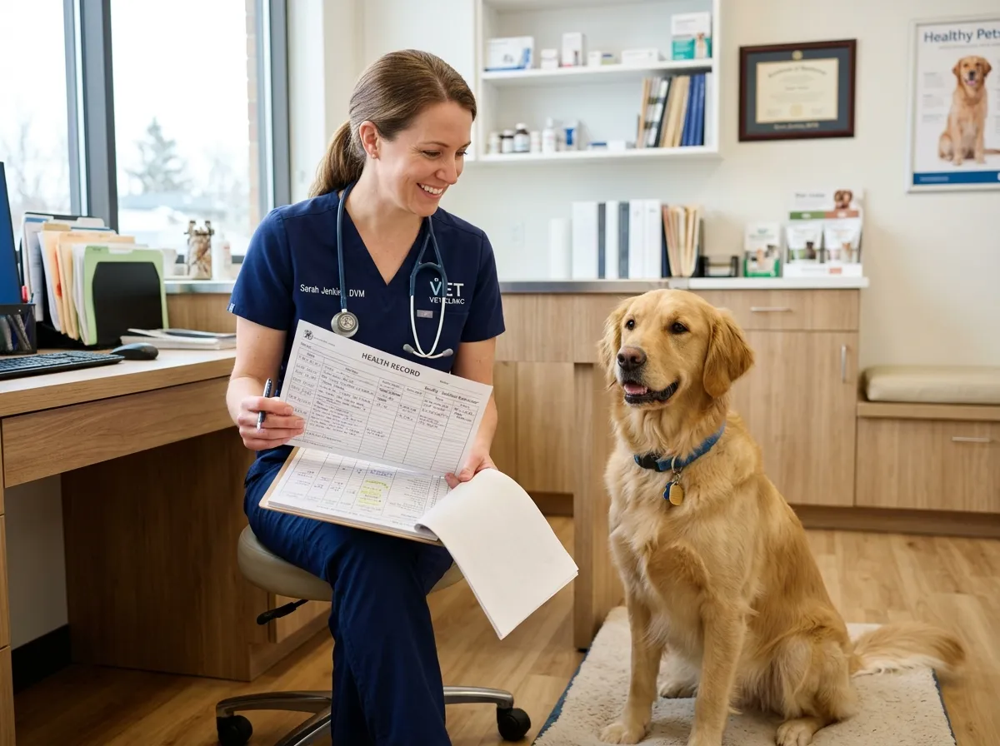
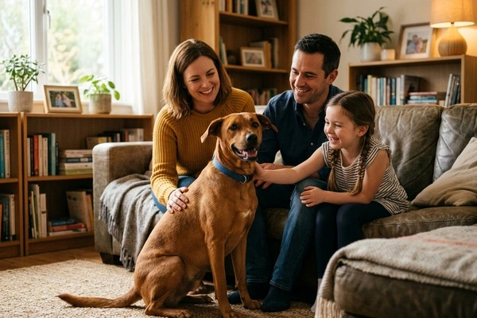

Wellness Shield
Annual vaccines, deworming calendar, nutrition review, and digital health records for everyday protection.
Book WellnessPreparing gentle care
Advanced Advanced tertiary veterinary medicine, gentle surgical care, ultrasonic scanning, and luxury pet grooming right at MMR Complex, Salem.
.webp)
Trusted By Pet Families
5000+Dogs, cats, and exotic pets treated with gentle clinical care at our Chinna Thirupathi hospital.

From first puppy vaccines to senior wellness, choose a care path designed by Stackly’s clinical team.

Annual vaccines, deworming calendar, nutrition review, and digital health records for everyday protection.
Book WellnessPre-op bloodwork, anaesthesia monitoring, recovery kennel stay, and post-surgery follow-up calls included.
Talk To SurgeonEvery visit follows a clear clinical flow so pet parents always know what happens next.
We note symptoms, diet, and past treatments before any procedure begins.
Lab tests, scans, and physical exams confirm the right clinical plan.
Medicine, surgery, or therapy is delivered with continuous monitoring.
Clear aftercare notes and follow-up reminders keep healing on track.
We offer complete clinical, preventive, and surgical care tailored specifically for dogs, cats, birds, and exotic pets.
Safe, temperature-controlled transport for medical emergencies and routine checkups across Salem.
 Learn More
Learn More

Medicated bath treatments, claw trimming, fur styling, and coat revitalizing by professional pet stylists.
Book GroomingBehavioral coaching, puppy vaccination schedules, and dietary nutrition programs designed by doctors.
 Explore Plans
Explore Plans


From triage to recovery — see the spaces where Salem pets heal.
Quick assessment so urgent cases never wait behind wellness visits.
Imaging, lab, and doctor consults under one roof at MMR Complex.

At Stackly Veterinary Hospital, our certified clinical team combines advanced medical technology with warm, zero-stress handling so your pets feel safe at every visit.
Thorough 30-minute physical examinations with zero rush, allowing doctors to understand your pet's exact history.
Instant access to diagnostic reports, digital X-rays, vaccine schedules, and doctor prescriptions on your phone.
Dedicated post-op recovery suites equipped with continuous warm monitoring and individualized pain management.
Flip through our specialized medical departments engineered for precision diagnosis and fast recovery.
High-resolution internal imaging for organ diagnostics and bone fracture analysis.
Non-invasive Doppler ultrasound scans, echocardiography, and digital radiography with instant results.
Book ScanUltrasonic plaque scaling, tooth extraction, and oral health checkups.
Prevent periodontal disease, bad breath, and tooth infections with gentle dental polishing.
Book Dental CheckCore pet immunization packages and ISO-compliant microchip identification.
Protection against Rabies, Parvovirus, DHPP, and Feline Leukemia with lifetime tracking.
Get VaccinatedOur passionate veterinary surgeons and clinical specialists bring over 15 years of surgical and pet care excellence.

Chief Veterinary Surgeon (BVSc & AH)

Feline Medicine & Cardiology

Dermatology & Allergy Cytology

Emergency & Trauma Surgeon

Outpatient clinic runs Mon–Sat, 9:00 AM to 8:00 PM at Chinna Thirupathi, Salem. Emergency surgery stays open 24/7.
Yes. Call +91 98765 43210 so triage can prepare oxygen, IV fluids, and surgical support before you arrive.
We care for dogs, cats, rabbits, birds, and selected exotic pets with species-aware protocols.
Yes — sign in to the Customer Dashboard for vaccines, lab results, and prescriptions anytime.
Usually withhold food 8–10 hours before anaesthesia. Bring past reports and current medicines; our team will confirm exact fasting rules.
Real recoveries that remind us why gentle veterinary medicine matters every day.
“Bruno’s fracture surgery was explained step by step. He was walking confidently within weeks.”
“The dental team handled Misty’s cleaning so gently. Bad breath gone, and she eats happily again.”

“Midnight emergency for our pup — Stackly’s triage team was ready before we reached the gate.”